Project / 04
DW Simplified Header
A ServiceNow internship exploration for Dynamic Window focused on consolidating six key actions into one clearer header, then supporting discoverability with lightweight onboarding tooltips.
Dynamic Window is an AI workspace where users interact with AI while staying in their current workflow. This project focused on simplifying the header so six core actions could be found faster and understood more consistently across all states.
Rather than redesigning the entire workspace, the challenge was to make a small but high-frequency surface feel more obvious, more teachable, and less visually fragmented.
Discuss this project ↗A clearer header without leaving the workflow.
Because DW lives beside active product work, even a small control surface has to feel intuitive immediately. The header mattered because it shaped how discoverable the whole assistant felt.
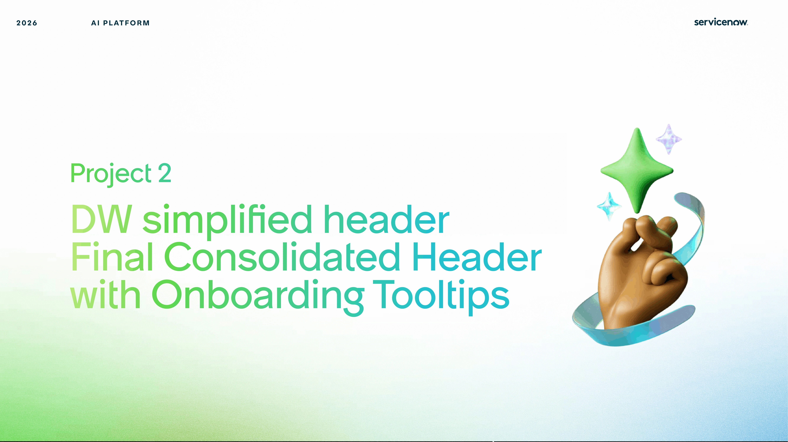
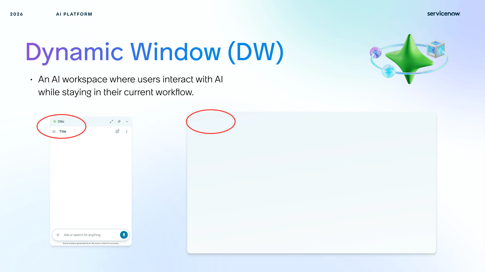
Three directions for a clearer header.
Katherine explored three directions first, and I collaborated on version three using Figma Make to create a higher-fidelity interactive prototype ready for UX validation.
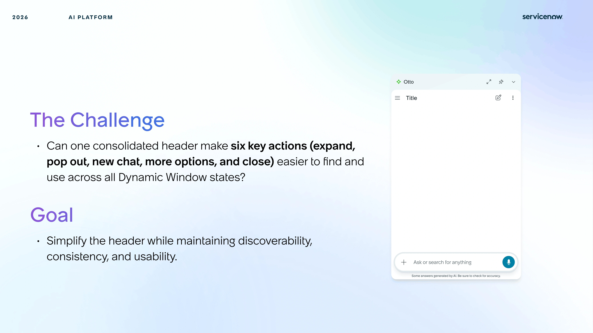
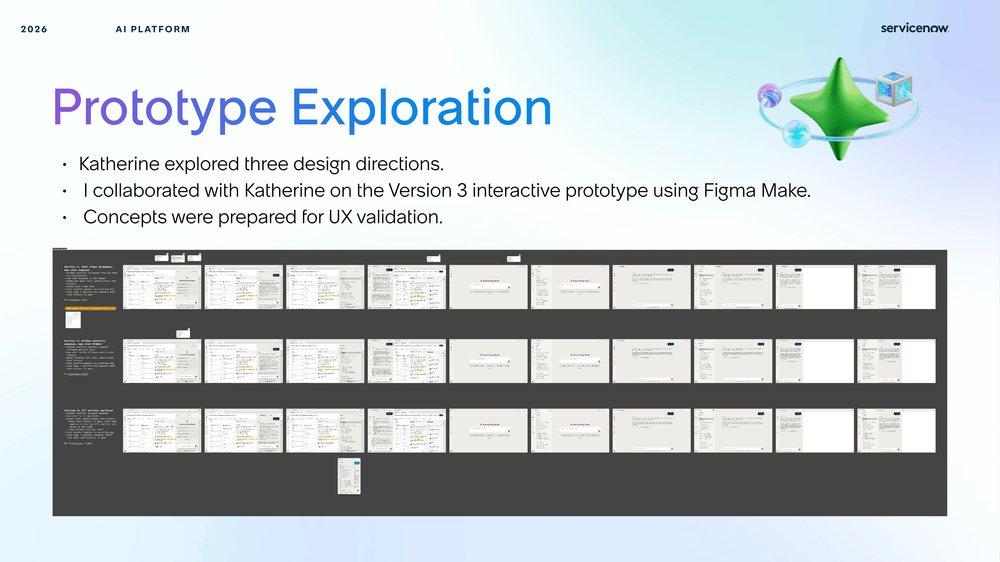
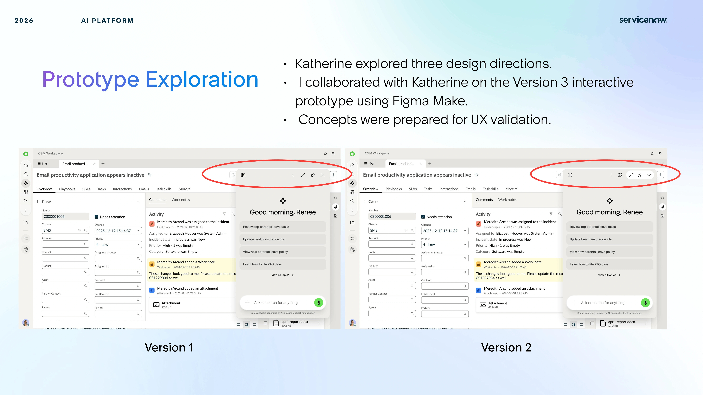
Research
Why I validated the header.
I needed to confirm that users could find, understand, and use the six actions consistently across every Dynamic Window state.
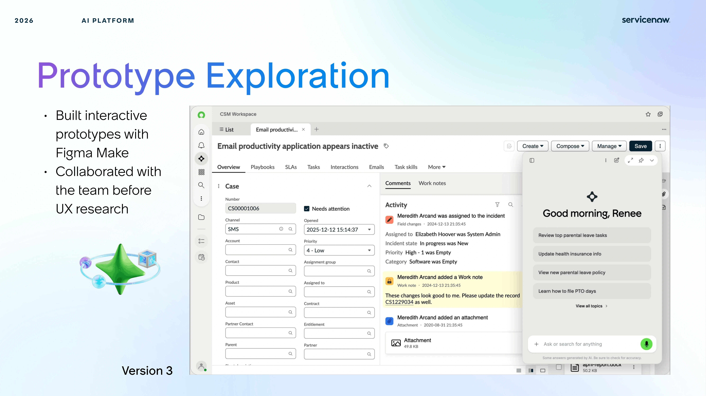
Final Design
Why I simplified the final header.
A consolidated structure and lightweight tooltips made the six actions easier to find without interrupting the workflow.
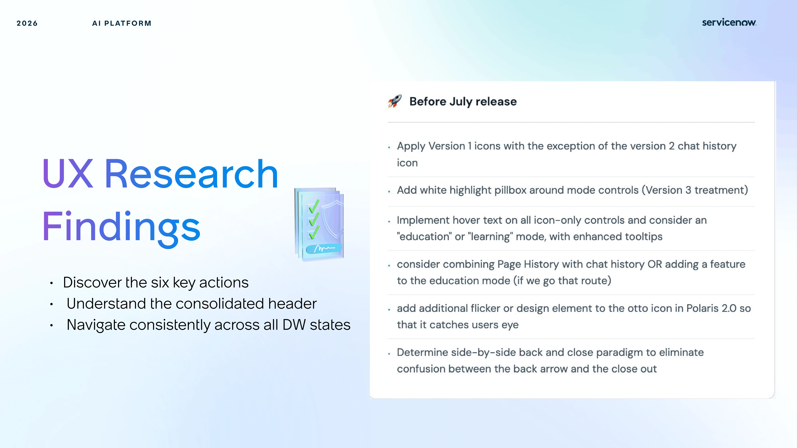
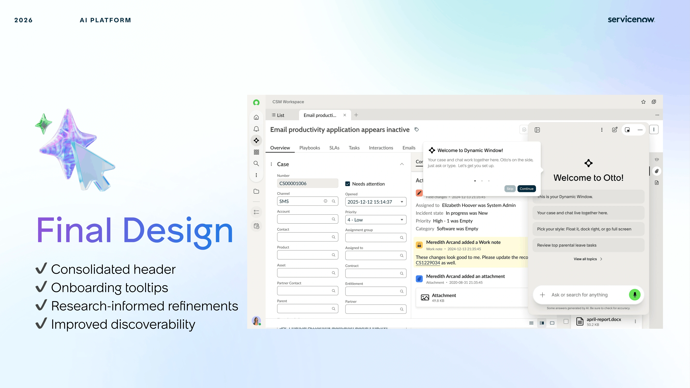
Reflection
Why this process mattered.
Combining AI prototyping, research, and collaboration turned a small interface change into a clearer, better-supported decision.
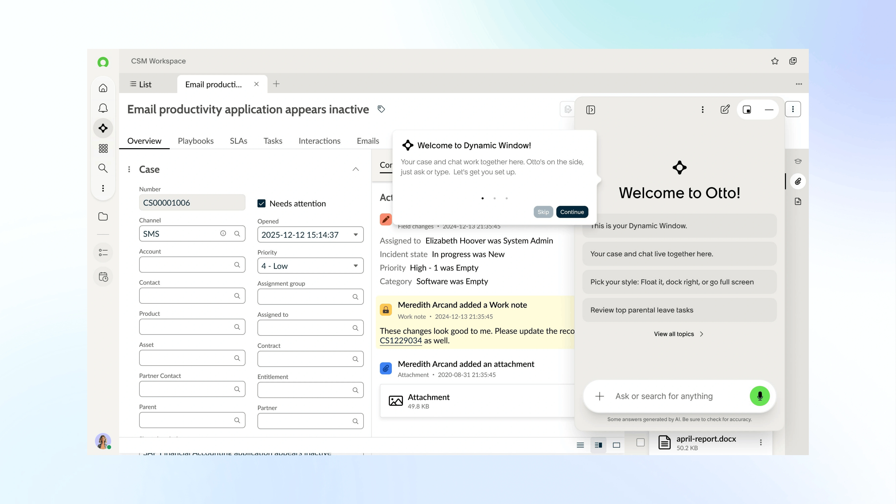
Appendix
Additional project frames.
These additional screenshots continue the design narrative with higher-fidelity states and refinement notes.
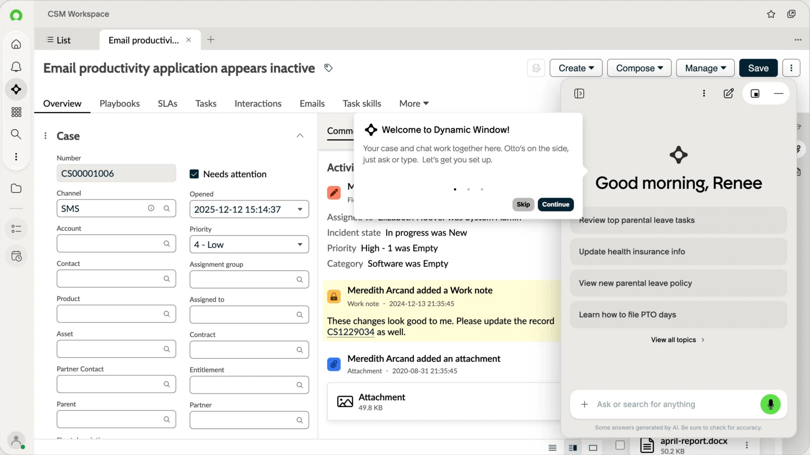
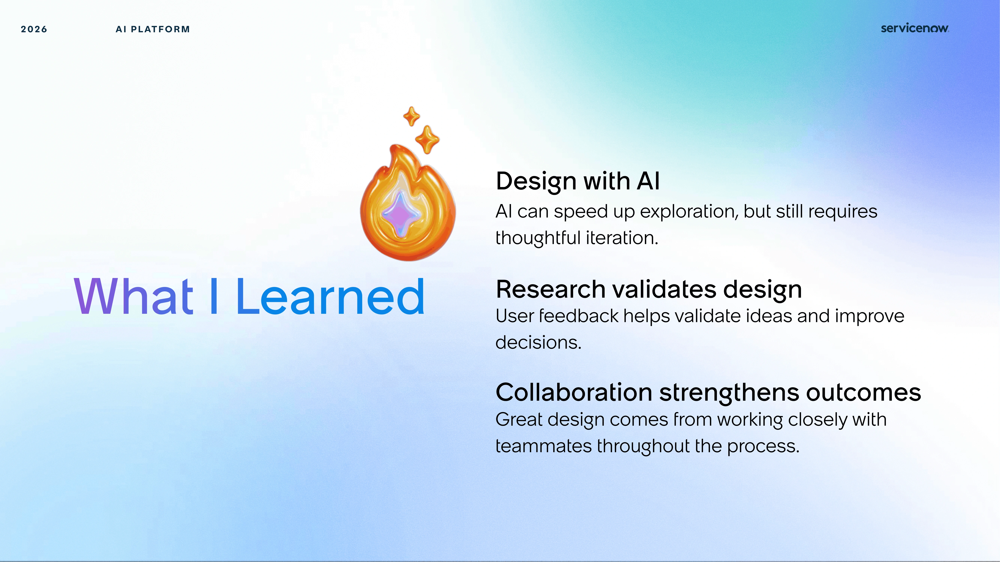